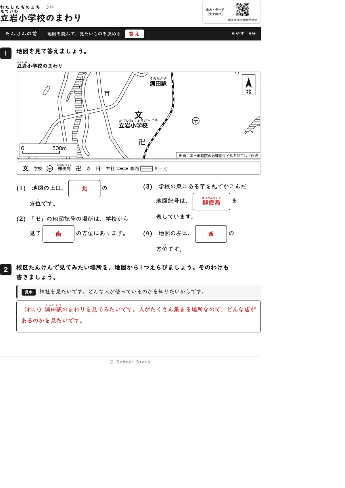
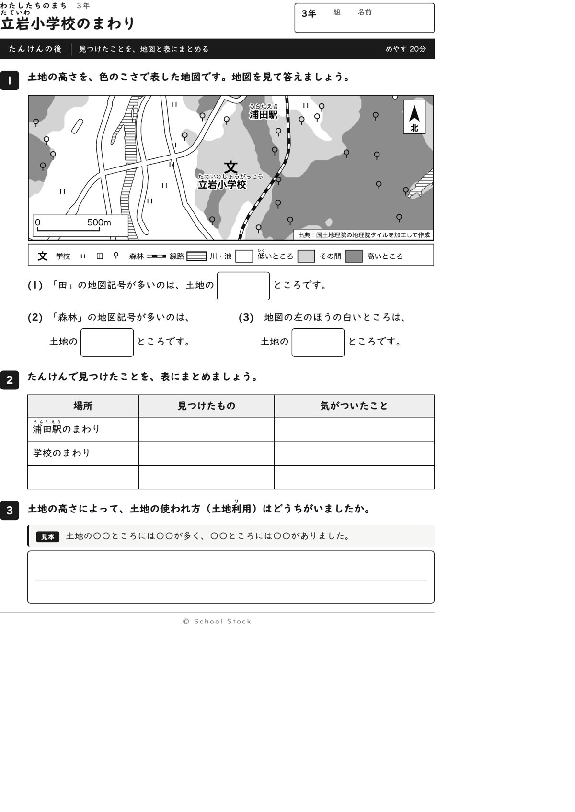
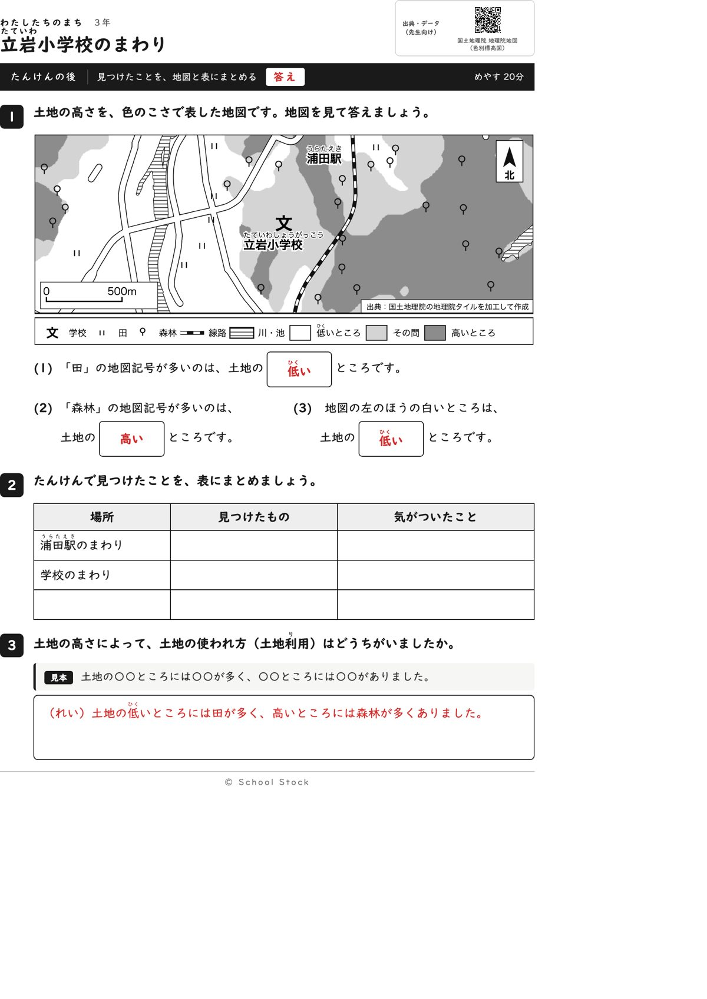
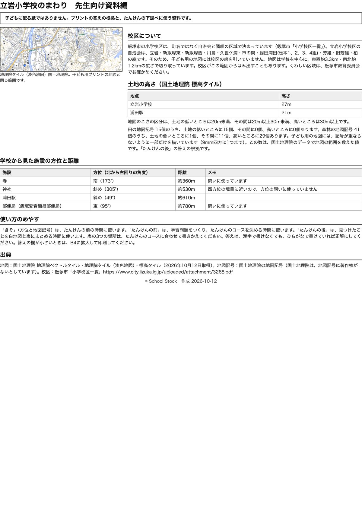

紙





直すところ
直すところはありません。
1回目のレビューで出た直し（1件・道具を直して作り直しました）
| 紙 | どこ | 何が困るか |
|---|---|---|
| たんけんの後 | 2の表の場所（愛宕団地のあたり、舞の浦団地のあたり） | 資料編の校区の自治会の一覧に両方とも載っておらず、愛宕団地は鯰田校区に入っています。校区たんけんで歩かない場所を、まとめる場所に指定してしまいます。 |
2回目のレビューで出た直し（1件・道具を直して作り直しました）
| 紙 | どこ | 何が困るか |
|---|---|---|
| たんけんの前、たんけんの後 | 前の地図とあとの地図の左下（縮尺の「500m」の左） | ほかの学校の「文」の記号が縮尺の「500m」の文字と重なっています。前の紙では白く薄くなって見え、あとの紙では黒い文が「500m」にくっついています。縮尺の文字が読みにくくなります。 |
専門家団の声（いまの紙を見て）
香月八重筆頭・全学年
前の紙は(4)が「地図の左は」に変わり、答えの西が、ほかの問いの文に出なくなりました。(3)の文に東は残っていますが、そこから西を出すには「右の反対」と一歩考える必要があり、三年生の方位のつかみ方として無理がありません。たんけんの後は、高いところに森林、低いところに田という1文をつかむ紙になっています。
日隈耕平社会
〒は学校の東（95度）、寺は南（173度）で、地図の位置と資料編の数字が合っています。田15個がすべて低いところ、森林41個のうち29個が高いところという数も、答えと合います。神社は斜め（305度）なので、方位の問いに使っていません。文字の重なりはなく、森林の記号が線路のふちに触れているだけで読めます。
藤川湊すぐ終わる子
(3)で東が分かっても、(4)は左だから西と考えるひと手間があり、写すだけにはなりません。すぐ終わりますが、手は動きます。
田淵さくら例がないと止まる子
1問目の北から順に進められて、止まりません。(2)の卍は学校の下にあり、見つけやすいです。たんけんの後は3に見本があり、書き出しで止まりません。
轟大和読む前に諦める子
問いは短く、答えの箱が文の中にあって読めます。学校の名前は文の真下にあり、〒とまぎれません。